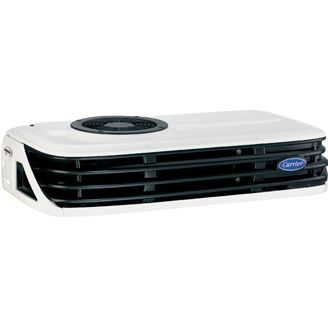

Мы переехали! г.Воронеж, ул. Землячки 17 Координаты: 51.712599, 39.291560
Продажа и ремонт рефрижераторов!
Ремонт воздушных автономных отопителей!
ООО "РемТрансХолод"
Мы — официальный дилер компании
Carrier — ведущего производителя авторефрижераторного оборудования.
Ведем продажу рефрижераторов
марки CARRIER, всей линейки
Вы можете получить гарантийный ремонт
рефрижераторов Carrier не только в Воронеже
, но и в других городах России, где есть участники дилерской сети.
Производим диагностику, техническое обслуживание и ремонт воздушных
автономных отопителей Webasto (Вебасто), Eberspacher
(Эбершпехер)
Все основные запасные части для
ремонта рефрижераторов и отопителей, более 1000 наименований, имеются на нашем складе.
Ремонтируем рефрижераторные установки любых марок всех мировых производителей.
Каждый специалист нашей компании прошёл обучение и получил сертификат допуска к работам.
Выполняем ремонт любых агрегатов
и устраняем любые поломки.
У нас огромный опыт — мы
произвели более 30 000 работ по монтажу и ремонту.
Работаем как с оригинальными комплектующими, так и c комплектующими
сторонних производителей.
Гибкий график работы сервиса позволяет
обратиться к нам в удобное для Вас время.
Наши клиенты
Ремонт рефрижераторов
ООО «РемТрансХолод» имеет в распоряжении необходимое оборудование для ремонта рефрижераторов,
широкий ассортимент запасных частей, обладает сервисной станцией площадью 650 кв.м., где одновременно
могут обслуживаться несколько рефрижераторов и автомобилей-фургонов малой кубатуры.
Наша компания,наряду с продажей, установкой и обслуживанием рефрижераторов CARRIER, проводит монтаж,
обслуживание и ремонт автомобильного холодильного оборудования таких марок, как «ZANOTTI»
(Занотти), «THERMO KING» (Термо-Кинг), «REF»(Реф),
«FROST» (Фрост), «ЭЛЛИНДЖ», «TERRA-FRIGO» (Терра-Фриго) и
др.
Виды ремонтных работ
Вот далеко не полный перечень видов работ по ремонту рефрижераторов, которые готова выполнить наша
команда:
Компания поддерживает заводскую гарантию на автомобильных рефрижераторах CARRIER. Для выполнения
гарантийного ремонта достаточно прибыть к нам на сервис, а наши специалисты выполнят необходимые работы.
Основанием для проведения гарантийного ремонта является:
Гарантийный срок агрегата.
Приобретение агрегата у официального дилера Carrier, вне зависимости от его расположения.
Регулярное прохождение ТО в гарантийный период, согласно сервисной книжки на агрегат.
Ремонт по гарантии вы можете осуществить не только в Воронеже
, но и в любом другом городе РФ,
где есть участник дилерской сети СARRIER.
Список официальных представителей Carrier
г. Аксай. Компания «Сив-Трансхолод-Ростов»
г. Аксай (хут. Мяковский). Компания «Сив-Трансхолод-Ростов»
г. Артём (Приморский край). Компания «Атлантик»
г. Астрахань. Компания «Арктика»
г. Белгород. Компания «Бизнестраксервис»
г. Брянск. Компания «Холодтранс»
г. Волгоград. Компания «Авто 34 РУС»
г. Вологда. Компания «РефТранс»
г. Воронеж. Компания «РемТрансХолод»
г. Екатеринбург. Компания «ТрансХолод»
г. Ижевск. Компания «Криал-Авто»
г. Иркутск. Компания «РЕФАВТОЦЕНТР-ИРКУТСК»
г. Казань. Компания «Холод Казань»
г. Калининград. Компания «Евросервис»
г. Красноярск. Компания «ГРУЗОВЫЕ РЕЗЕРВЫ»
г. Курган. Компания «Кургантрансхолод»
г. МО, Балашиха. Компания «СИВ Трансхолод»
г. МО, Дмитровский р‑н. Компания «СИВ Трансхолод»
г. МО, Люберецкий р‑н. Компания «ТермоСфера»
г. МО, Наро-Фоминск. Компания «Нара Авто Транс»
г. МО, Наро-Фоминский р‑н. Компания «ТермоСфера»
г. МО, Одинцовский р‑н. Компания «РефКомТранс»
г. Набережные Челны. Компания «КТК»
г. Нижний Новгород. Компания «Транспортный холод»
г. Новосибирск. Компания «СибТрансКолд»
г. Новосибирск. Компания «Реф Сиб Сервис»
г. Омск. Компания «ГРУЗОВЫЕ РЕЗЕРВЫ»
г. Пермь. Компания «Вектор»
г. Самара. Компания «Транс Лидер»
г. Санкт-Петербург. Компания «РефТранс»
г. Саратов. Компания «С-АВТО»
г. Саратов. Компания «РЕФСАР»
г. Смоленск. Компания «Холод-66»
г. Сургут. Компания «Тюмтермотранс»
г. Тула. Компания «АВХОЛ»
г. Тюмень. Компания «Тюмтермотранс»
г. Уфа. Компания «Ректорг-Плюс»
г. Хабаровск. Компания «Атлантик»
г. Челябинск. Компания «ЮжУралТрансХолод»
г. Чита. Компания «ЧитаРефСервис»
г. Ярославль. Компания «ЯрПарт»
Продажа рефрижераторных агрегатов
Наша компания осуществляет продажу, монтаж, гарантийное обслуживание холодильно-обогревательных
установок фирмы «CARRIER» различных моделей, а именно:
Модель CITIMAX 500
Модель CITIMAX 350
Новая линейка рефрижераторов Карриер Ситимакс. От агрегатов Виенто и Ксариос
отличается упрощенным дизайном, оптимизированными теплообменниками, с увеличением
мощности агрегатов с сохранением габаритов.
Модель Neos 100S
NEOS (Неос) — линейка холодильных агрегатов для малых развозных
автомобилей с объемом кузова до 6 м3, данные агрегаты являются самыми
тонкими на рынке, с приводом от генератора автомобиля.
Максимально практичен, первый по безопасности и защите окружающей среды.
Модель Pulsor 500
Благодаря применению уникальной технологии E-Drive, холодильная установка Pulsor
(Пульсор) легко обеспечивает нужную температуру в фургоне, даже при скорости
работы двигателя автомобиля, равной 1000 оборотов в минуту. Это очень удобно для
компаний, производящих развоз продукции в городских условиях, где значительную часть
времени занимают остановки, движение в пробках, частое открывание/закрывание
дверей фургонов. Для большинства других систем этого класса оптимальной является
скорость работы двигателя 2400 оборотов в минуту. «Пульсор» легко
справится с задачей перевозки продукции в городской черте.
Модель Viento 350 R404a
VIENTO (Виенто) — лучшие в мире характеристики от фирмы
«Carrier» в легком, простом и исключительно универсальном агрегате. Такие
агрегаты пригодны для любой температуры окружающего воздуха.

Модель Xarios 300
XARIOS (Ксариос) — вершина технологий в сегменте
холодильно-обогревательных установок прямого привода, разработана для компаний,
транспортирующих охлажденную или замороженную продукцию, сохранность груза у
которых, стоит на первом месте! «Ксариос» – это верх надежности продуктов
в развозных фургонах малой и средней грузоподъемности. Новая технология производства
позволила значительно увеличить холодопроизводительность и скорость снижения
температуры внутри кузова.
Модель S 1250
Supra (Супра) — агрегаты предназначены для средне и крупнотоннажных
грузовиков. «Супра» — представитель блестящего тандема проверенных в
работе надежных устройств и последних технических достижений. Эти агрегаты
оборудованы собственным дизельным двигателем, работающим абсолютно независимо от
транспортного средства
Модель Vector 1950
Агрегаты серии VECTOR (Вектор) предназначены для полуприцепов и обладают
улучшенными характеристиками, оптимальной холодопроизводительностью, увеличенным
сроком службы, низким уровнем шума, удобным микропроцессорным управлением. Являются
автономными установками с дизельным двигателем.
Модель Vatna 200
Эвтектические агрегаты VATNA (Ватна) — это низкотемпературное,
холодильное оборудование. Незаменимы для производителей мороженого и полуфабрикатов.
Опасность приобретения оборудования у «серого дилера»
ООО «РемТрансХолод» предупреждает о приобретении рефрижератора у «серого продавца»!!!
ООО «РемТрансХолод», заботясь о защите своих потенциальных покупателей, рекомендует требовать
на сервисных станциях, при покупке холодильного агрегата, дилерский сертификат дистрибьютора CARRIER
— ООО «СИВ Трансхолод». Отсутствие такого сертификата у компании-продавца,
свидетельствует об отсутствии гарантии на холодильную установку и, соответственно, гарантийной
поддержки, в процессе эксплуатации ХОУ на территории РФ, СНГ и Европы.
У официального дистрибьютора CARRIER (Карриер) существует база учета всех агрегатов, проданных
через официальную сеть. Все клиенты официальных дилеров автоматически получают заводскую гарантию.
Поддержание гарантии осуществляется в течение срока действия гарантии рефрижератора.
В случае выхода из строя холодильной установки, в пределах гарантийного срока эксплуатации, работы по
замене вышедших из строя механизмов и узлов рефрижератора, а также запасные части, за исключением
расходных материалов, меняются бесплатно в любом регионе РФ, СНГ и Европы, на официальных станциях
CARRIER (Карриер).
Покупая холодильно-обогревательную установку (ХОУ) у неофициального, неавторизованного
(серого) продавца, можно приобрести агрегат, который не прошёл предпродажную подготовку. Любой
потенциальный покупатель может получить ХОУ, на котором оригинальные заводские запчасти заменены на
контрафактные (несертифицированные), а зачастую просто поддельные. Кроме этого, «серый
продавец», в отличии от официального, не сможет, как правило, осуществить гарантийный ремонт Вашего
рефрижератора в случае, если агрегат сломался в другом регионе.
Вот перечень ВСЕХ ОФИЦИАЛЬНЫХ ДИЛЕРОВ, работающих в границах Российской Федерации.
ПРОЧИЕ ОРГАНИЗАЦИИ ТАКОВЫМИ НЕ ЯВЛЯЮТСЯ, их деятельность считается нарушением законодательства РФ и
влечет гражданско-правовую, административную, а, в ряде случаев, уголовную ответственность.
В случае выхода из строя гарантийного рефрижератора, купленного у официального дилера, покупатель может
быть уверен в сервисной поддержке в любом регионе РФ, СНГ и Европы за счет CARRIER. Серый дилер такой
поддержки, конечно, оказать не сможет.
Иногда холодильную установку у «серого продавца» имеет смысл приобрести:
если ее стоимость существенно ниже, нежели у официального дилера, и вы готовы смириться с
отсутствием гарантии на нее.
если стоимость холодильно-обогревательной установки столь незначительна, что вы не собираетесь
обращаться по гарантии — «сломается - куплю новое»
В любом случае, решать только Вам.
О компании
Компания ООО «РемТрансХолод» работает на рынке поставок и ремонта рефрижераторов с 2012 года.
Является официальным дилером производителя холодильной техники Carrier Transicold в
Центрально-Черноземном регионе. Имеет сервисный центр в Воронеже. Ремонтом автомобильного
холодильного оборудования в компании занимаются 10 сертифицированных механиков. Обладает огромным опытом
по ремонту рефрижераторов и их установке (за время работы компании произведено более 1000 монтажных
и более 20000 ремонтных работ на рефрижераторах). Выполняет ремонт любой сложности.